21 סרטונים קצרים וממוקדים
בערך שתי דקות כל אחד.
כל סרטון נוגע ברגע אחד אמיתי, ונכנס גם ליום עמוס.
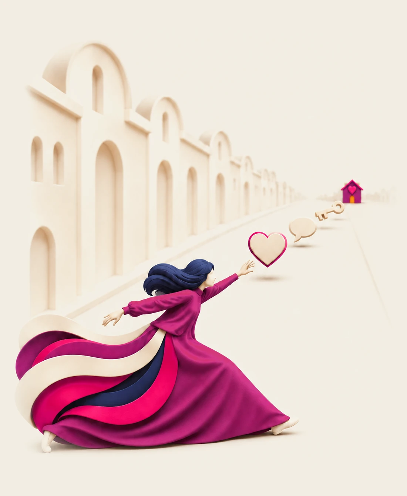
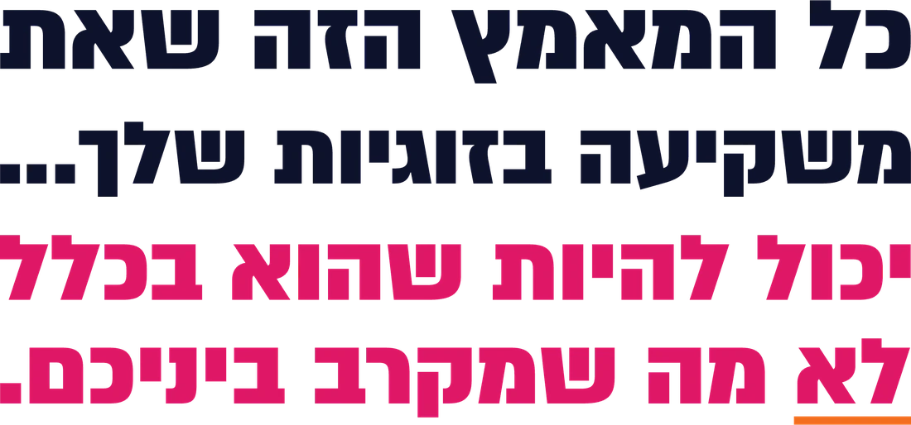
כל המאמץ הזה שאת משקיעה בזוגיות שלך... יכול להיות שהוא בכלל לא מה שמקרב ביניכם.ונכון, זה כל כך מעייף,
כל הזמן לנסות... להסביר... להכיל... לוותר...
כשבסך הכל את רוצה שיהיה ביניכם טוב, קרוב, נעים.
בדיוק בשביל זה נוצרה
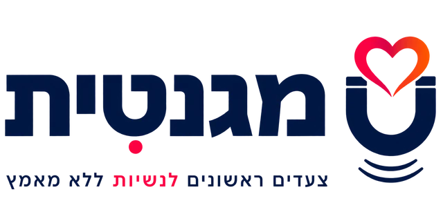
אולי את מכירה את זה.
הוא אומר ״לא עכשיו״, ובתוכך זה נשמע כמו ״את לא חשובה לי״.
הוא נח בזמן שאת עמוסה, ואת כבר פותחת בראש תיק ראיות מסודר.
את אומרת ״עזוב, אני אעשה״, ואז בסוף היום עומדת מול הכיור, ומרגישה שאף אחד לא קלט כמה השקעת ועבדת והתאמצת.
מאמץ תמיד יושב על פחד.
אולי התרגלת לחשוב
שאם את לא תחזיקי, לא תנדנדי,
לא תרדפי ולא תקחי אחריות על האהבה ועל הקשר-
אז לא תקבלי כלום, ושום דבר לא יזוז או יחזיק בינכם.
וזו ממש לא אשמתך, ככה בטעות למדנו:
להיות אשה טובה
לחשוב שכל הבית תלוי בנו
לעמוד בכל כך הרבה תנאים ומשימות
לשכוח לסמוך על היכולות של האיש שלנו
לספר לעצמנו שהאהבה צריכה מאיתנו אינסוף מעשים
ובעיקר -
לפחד שנהרוס, שנקלקל, שנאבד, שנפסיד...
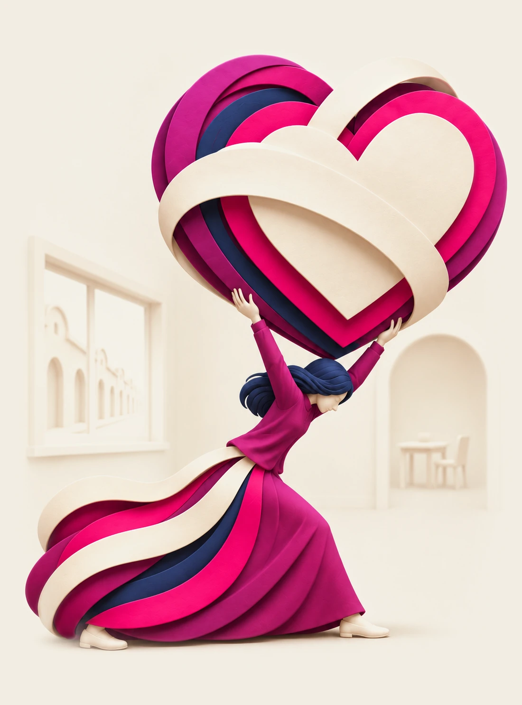
רק מה?
בתוך כל ההחזקה הזאת -
את קצת שוכחת להיות אשה.
את מתפקדת, את דוחפת, את מתעייפת,
את נהיית פחות פנויה לקבל ממנו, ופחות פנויה לראות את מה שכבר יש.
וכשאין אצלך מקום לקבל -
גם הוא זז מהמקום הגברי שלו, ולאט לאט מאבד אותו.
והכי חבל?
זה לא רק מאמץ מתסכל, זה פספוס!
כי כל הזמן הזה,
יש בך כוח נשי טבעי וממגנט.
כוח שלא צריך להוכיח, להסביר או לנדנד.
הוא חי ברכות שלך, בשמחה, ברצונות שלך,
בשקט שבך כשאת מחוברת לעצמך.
כשהוא ער - פשוט נעים להיות לידך,
האיש שלך מרגיש אותו, וגם כל מי שסביבך.
כוח שיודע
לקרב בלי לרדוף,
לעורר בלי להילחם,
למגנט בלי להתאמץ.
אבל כוח עוצמתי כל כך, שיכול לעבוד בשבילך,
מכוסה בכל כך הרבה שכבות של מאמץ...
אז,
האם באמת עוד מאמץ זה מה שחסר לך?
או
אולי החיים מבקשים ממך לגלות מחדש את הנשיות הממגנטת שכבר קיימת בך?
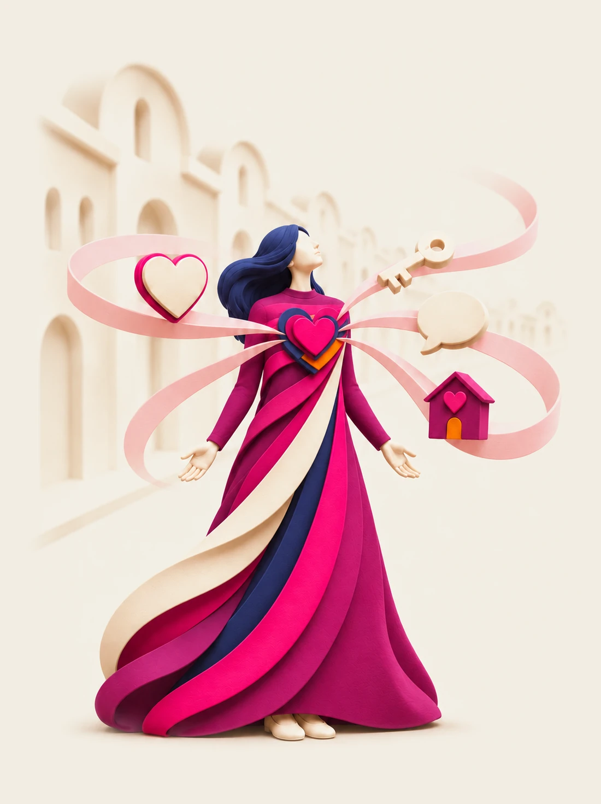
בדיוק בשביל זה יצרתי לך את
כל מה שצריך כדי להתחיל, בלי להעמיס עלייך עוד.
בערך שתי דקות כל אחד.
כל סרטון נוגע ברגע אחד אמיתי, ונכנס גם ליום עמוס.
תרגול בכל סרטון.
לא רעיונות יפים שנשארים בראש, אלא כיוונים שאפשר לקחת לתוך רגעים אמיתיים.
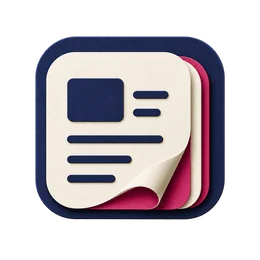
סיכום PDF לכל אחד מ-21 הסרטונים.
כדי שתוכלי לחזור לרעיון שנגע בך גם כשאין לך זמן לצפות שוב.
קובץ שנשלח אלייך למייל.
יעזור לך להבין מאילו סרטונים הכי נכון להתחיל.
גישה לחודש, ואת פשוט כותבת לה במילים שלך.
כדי שתוכלי להעלות סיטואציה מהחיים ולקבל הכוונה לסרטון או לעיקרון שיכול להתאים לרגע הזה.
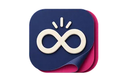
באתר הקורס, ואפשר גם להוריד מהדרייב.
אין צורך לצפות בהכול ברצף. התכנים נשארים זמינים לך, ואת חוזרת אליהם בכל פעם שרגע אחר בחיים מבקש ממך צעד חדש.
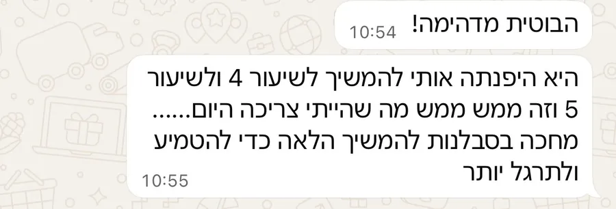
היה לי ממש חשוב שמגנטית תהיה נגישה,
שכל אשה תוכל להרשות לעצמה להכיר את הצעדים הראשונים האלה.
ולכן בחרתי כרגע לאפשר אותה בהשקעה קטנה וסמלית:
השקעת ההצטרפות שלך למגנטית עכשיו:
87 ש״ח21 סרטונים קצרים,
סיכום לכל סרטון,
קובץ אבחון למייל,
חודש גישה לבוטית של מגנטית*,
וגישה ללא הגבלת זמן.
תשלום חד-פעמי | רכישה מאובטחת
כן, אני רוצה להצטרף למגנטית ב-87 ש״חלאחר ההצטרפות תקבלי את הגישה לתכנים ואת קובץ האבחון למייל.*הבוטית של מגנטית היא שירות דיגיטלי, לא אדם. היא עשויה לטעות, ולא מחליפה ייעוץ אישי או טיפול. השימוש בה כפוף למכסת שימוש לכל אשה ולתנאי שימוש ופרטיות.
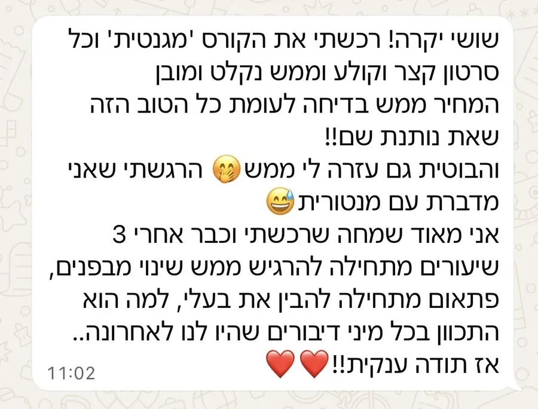
יש במגנטית 21 סרטונים קצרים. הנה, למשל, על מה חלק מהם מדברים:
ביקשת הכי יפה, עם ״בבקשה״ ועם חיוך, ובכל זאת הוא נאטם?מה שהוא שמע התחיל עוד לפני שפתחת את הפה.
בקשהדרישהחופש
נותנת ונותנת, ובסוף היום מחכה למילה טובה שלא מגיעה?יש נתינה שמרוקנת אותך, ויש נתינה שממלאת אותך ומושכת אלייך הערכה.
נתינההערכהמלאות
הוא לא ענה להודעה, ותוך דקה הראש כבר רץ ל״נמאס לו ממני״?בואי נכיר את מי שמנהלת אצלך את הרגעים האלה, ונחזיר לה ביטחון.
בהלהשקטביטחון
כל הבית על הכתפיים שלך, והוא נשאר בצד?יכול להיות שהגבר החזק והמוביל שרצית כבר כאן, רק אין לו מקום להיכנס.
להרפותלסמוךלהוביל
מעדיפה לסחוב לבד, רק לא להכביד עליו?יש מצב שבדיוק את הבקשה הזאת הוא רוצה לשמוע ממך.
רצוןבקשהבלי להתנצל
ימים שהכול פלאט, אין לך חשק לכלום וכל דבר נהיה עוד מטלה?הכיבוי הזה מנסה להגיד לך משהו, ויש בו מפתח לשמחה שלך ולחיבור ביניכם.
חשק״בא לי״שמחה
כשהוא כועס, מרוחק או בתקופה קשה, את נסחפת איתו לתוך הסערה?אפשר להישאר יציבה ושקטה, ודווקא ככה להיות הכי שם בשבילו.
הסערה שלויציבותעוגן
מחייכת כשבפנים כואב, ובולעת את הכעס כדי לא לקלקל?ומה אם דווקא הכנות שלך מקרבת יותר מכל חיוך מאולץ?
כאבכנותמותר להרגיש
מגנטית:
21 צעדים קטנים שנוצרו בשבילך, כדי להתחיל להעיר את המהות הנשית המדהימה שלך.
את לא יכולה להשקיע במשהו שאין לך שליטה עליו,
ועל הלב של אדם בוגר אי אפשר לשלוט (גם על ילד אי אפשר :))
מה כן בשליטתך?
להתאמן ולטפח את הנשיות שלך, את הכוח הנשי שלך.
לאמן בעדינות את הדרך בה את מגיבה בתוכך, את הדרך בה את מבקשת, את היכולת להיות פנויה לקבל ממנו, להיות מסוגלת,
לדייק ולהרחיב את זוית הראיה שלך שמאירה כוחות, להתחבר, לראות את מה שכבר יש ולהתמלא הודיה.

חשוב לי שתדעי: כשאת משחררת מאמץ, את לא מתרחקת.
את חלילה לא מפסיקה לדבר איתו, לא מפסיקה לרצות קרבה,
ולא מוותרת על שום דבר שאת חולמת עליו בקשר.
שחרור מאמץ הוא ריפוי של כל מה שמכסה על הרצון, על השמחה ועל התשוקה שלך.
ככל שאת משחררת יותר, את מתחברת בתוכך לעוד רכות, עוד חמלה, עוד חיבור ללב שלך, עוד ביטחון שאת ראויה וטובה.
וזה רק מעורר בך חיבור גדול יותר גם בזוגיות.
איך מתבטאים התרגילים של שחרור המאמץ ביום-יום?
לפעמים זו נשימה לפני שאת עונה.
לפעמים בקשה חדשה בביטחון,
לפעמים ויתור על הצורך לתקן אותו מיד,
ולפעמים זה פשוט לחזור לעצמך, במקום עוד ניסיון להשיג ממנו תשובה.
כל סרטון במגנטית הוא בדיוק צעד קטן כזה.
תנועה רכה ונשית, דיוקים קטנים שעושים שינויים גדולים.
אני לא מבטיחה לך -
שזה יגרום לך לשלוט במה שהוא יעשה, ירגיש או יבחר.
אף אחת לא יכולה להבטיח לך דבר כזה.
מה כן?
השינוי יתחיל לקרות אצלך, בלב, בגוף, בתנועה ובביטוי שלך:
כי את מתאמנת ומרוויחה
יותר מקום לנשום לפני שאת מגיבה,
לבקש משהו בלי פחד, חשש ודאגה,
לראות פתאום גם את מה שכבר יש,
לתת מקום לרגש כואב ולאפשר לו להשתחרר,
כמובן ששינוי אצלך תמיד מזמין גם שינוי אצל האיש שלך.
זה קורה שוב ושוב לתלמידות האלופות שלי.
ואז - הרבה שקט וחיבור חדש מתחילים להיכנס אליכם הביתה, בעזרת השם.
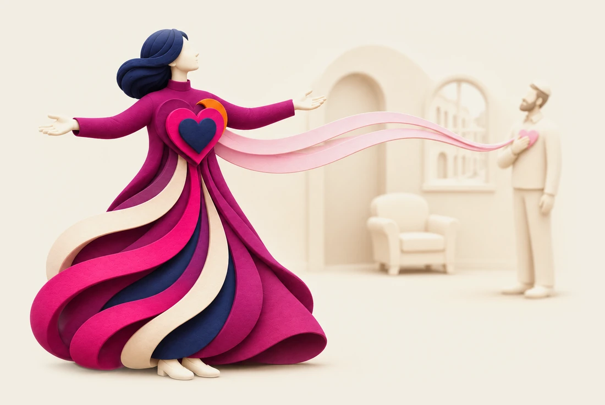
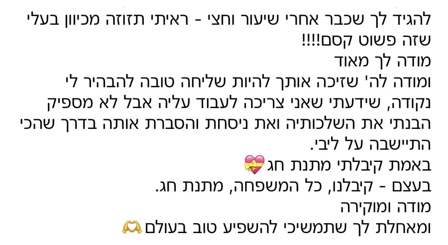
ממש לא! מגנטית לא אומרת שאת אחראית לבד על הזוגיות, ולא מבקשת ממך להשתנות כדי ״לתקן אותו״. האחריות לקשר נשארת של שניכם. אבל האחריות שלך להרגיש טוב, לבנות בך ביטחון ושקט, להתחבר לנשיות הקסומה והנעימה שלך - היא אחריות שלך:)
הוא לא צריך לצפות בשום דבר, ולא צריך לדעת. מגנטית היא שלך, ומה שאת מתרגלת שם נמצא בשליטתך: איך את מגיבה ואיך את מבקשת. ומה הוא יעשה עם זה? את זה אני לא מבטיחה, אבל יש מצב שתופתעי, חכי :)
מגנטית לא מוסיפה לך עוד פרויקט או תאוריה לא קשורה למציאות. היא בנויה מצעדים קצרים מאוד, שפוגשים את הרגעים שאת כבר חיה בהם. את פשוט בוחרת סרטון אחד שמתאים למה שקורה לך עכשיו, ולוקחת ממנו תרגול. זה אימון מתנה בשבילך שמשנה את החוויה שלך ולא מאמץ לשנות את הזוגיות. השפעה מכיוון אחר ומפתיע.
הסרטונים קצרים, בערך שתי דקות כל אחד. לא צריך לצפות בכולם, לא צריך להתקדם לפי סדר, ולא צריך לפנות ערב שלם. אפשר להיכנס דווקא ברגע שבו משהו מציף אותך, או בזמן שקט שיש לך.
סרטון אחד לא עושה הכול, ואני לא אגיד לך שכן. אבל כל סרטון פוגש רגע אחד ונותן לך דבר אחד לקחת ממנו, ואת זה אפשר באמת לזכור באמצע החיים. ואת חוזרת לאותו סרטון בדיוק כשהרגע הזה קורה שוב.
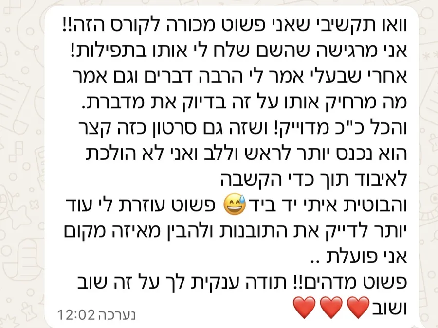
לא צריך להבין בטכנולוגיה. תקבלי קישור לבוטית במייל ברוכה הבאה אחרי ההצטרפות, תיכנסי עם המייל שאיתו הצטרפת, בלי לפתוח חשבון, ותוכלי פשוט לכתוב לה במילים שלך. אין צורך בניסיון קודם.
לא. הבוטית נמצאת אצלי באתר, ולכן אין צורך במנוי בתשלום או בפתיחת חשבון. את נכנסת עם המייל וזהו.
בדיוק בשביל זה תקבלי את קובץ האבחון למייל, ובמשך חודש תוכלי להיעזר גם בבוטית של מגנטית*, שתכוון אותך לסרטון או לעיקרון המתאים לפי הסיטואציה שתעלי.
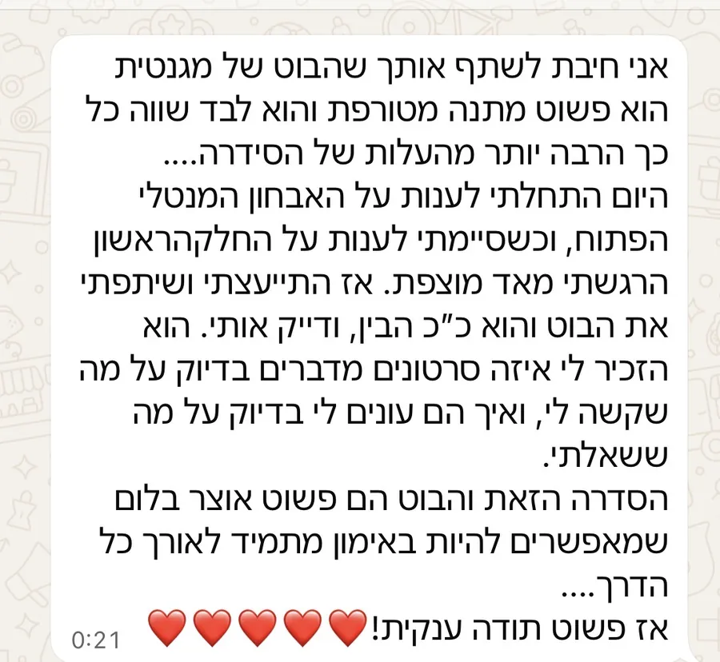
לתכני מגנטית יש לך גישה באתר לשנה שלמה, ואם את רוצה אותם ללא הגבלת זמן - את יכולה להוריד את הסרטונים אלייך מתוך הדרייב.
הגישה לבוטית היא למשך חודש, כדי לתת לך מוטיבציה להתמסר לתרגול כבר עכשיו.
שווה להציץ גם בקידומי מכירות ובספאם :) ואם עדיין לא, תכתבי לנו ל-shoshi@shoshizelikovith.com ונסדר את זה.
נשואה 25 שנה ואמא לשמונה ילדים, תודה להשם.
מאמנת מנטלית, מטפלת בפסיכותרפיה הוליסטית, מייסדת הדרך של אשה ללא מאמץ, ומייסדת בית הספר שלם להכשרת מאמנות מנטליות.
חמש עשרה שנה אני מלווה נשים בשינוי, בריפוי ובהשפעה במערכות יחסים. בדרך הזו עברו אלפי תלמידות, ואני מנהלת קהילה של עשרות אלפי עוקבות.
ומגנטית היא הצעד הראשון שלך בשפה ובתודעה של אשה ללא מאמץ, ובדרך להשפיע בזוגיות בלי לרדוף ובלי להילחם.
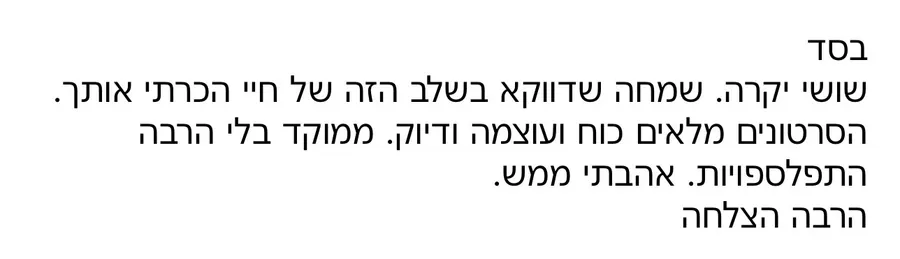
ואני לא באה להוסיף לך עוד משימות ועוד תנאים (יש לך מספיק :))
אני רוצה להוריד ממך את מה שסחבת עד היום, וחשבת שצריך אותו כדי שיהיה ביניכם יותר חיבור, שמחה וחברות.
אז בואי נתאמן ביחד, בצעדים קטנים, מדויקים ומעשיים, ונפנה מקום לאשה הממגנטת שאת.
אני מחכה לך בפנים באהבה.
מגנטית: 21 סרטונים קצרים, סיכום לכל סרטון, קובץ אבחון למייל, חודש גישה לבוטית של מגנטית*, וגישה ללא הגבלת זמן.
87 ש״ח במקום 197 ש״ח | תשלום חד-פעמי | רכישה מאובטחת
אני מתחילה עכשיו ב-87 ש״ח